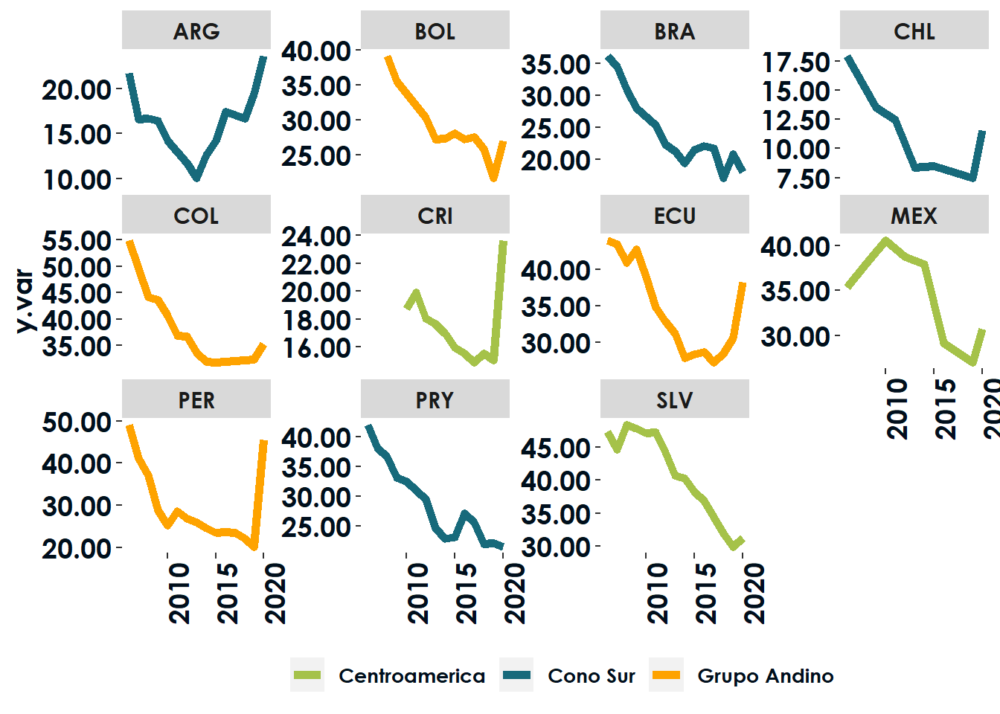
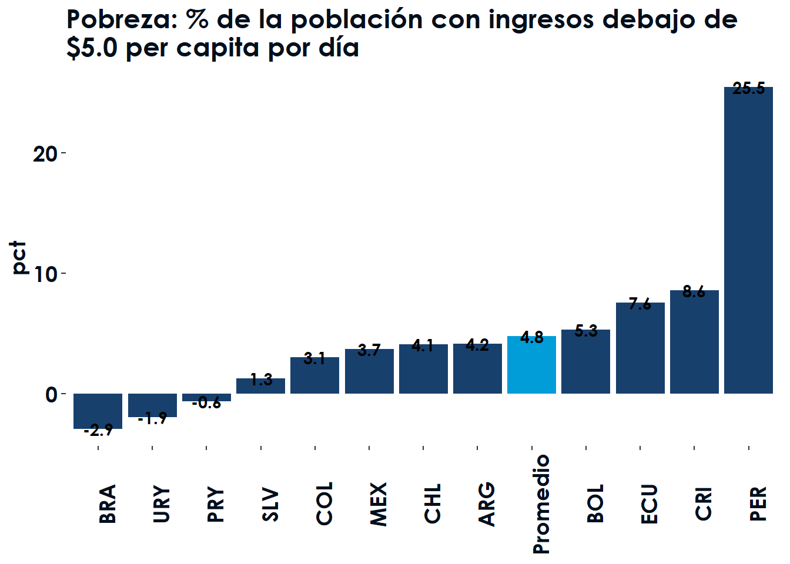
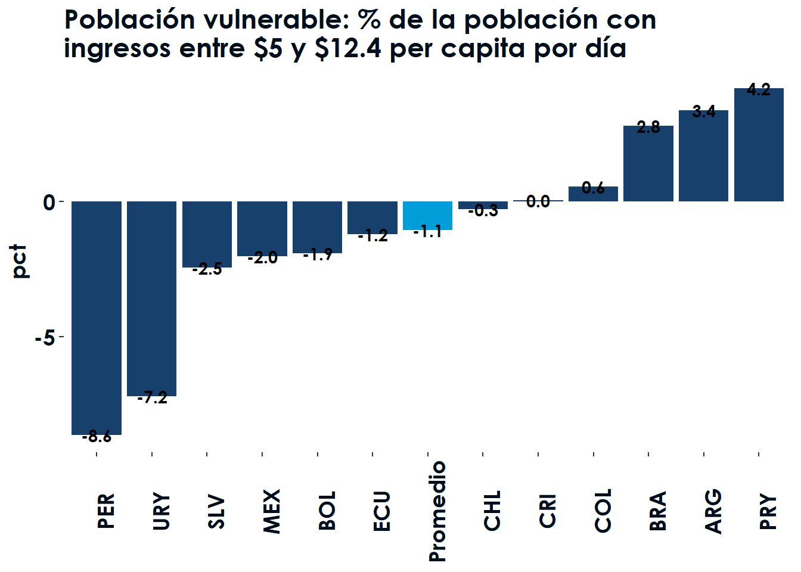

Sección 1 Pobreza y protección social
En esta sección se consideran los indicadores de porcentaje de la población viviendo en pobreza, con vulnerabilidad, recibiendo remesas, así como el coeficiente de Gini.
Como análisis general se presenta un overview de los indicadores cubiertos en esta sección para los años para los que se cuenta información. En contraste con el resto de la sección, este resumen general se presenta para todos los paises, y no únicamente para los que tienen datos en 2020.
Table 1.1: Tabla de indicadores pobreza y protección social
Figure 1.1: A table
1.1 Pobreza
1.1.1 Evolucion

1.1.2 Cambios promedio

1.1.3 Por área

1.2 Vulnerable
1.2.1 Evolucion

1.2.2 Cambios promedio

1.2.3 Por área

1.3 Gini
1.3.1 Evolucion

1.3.2 Cambios promedio

1.3.3 Por área

1.4 Remesas
1.4.1 Evolucion

1.4.2 Cambios promedio

1.4.3 Por área